CODING AGENTS AS PIXEL WORLD MODELS
traex/DeepSeek-V4.1-Flash · dynamic_spatial_relationship_0051
点击播放 · 原生 RGB 像素
逐轮保存的候选
回放视频、检查图与代码变化。
每份候选均可单独播放。实际图片检查记录在下方工具轨迹中。
候选 01播放与检查图
点击播放 · 原生 RGB 像素

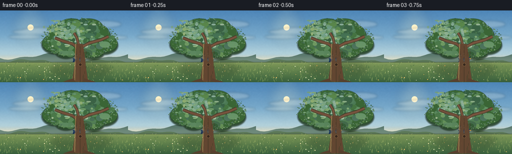
展开代码变化
--- 上一保存版本
+++ 本次保存版本
@@ -0,0 +1,491 @@
+from pathlib import Path
+import math
+
+import numpy as np
+from PIL import Image, ImageDraw, ImageFilter
+
+from artifact_io import save
+
+
+ROOT = Path(__file__).resolve().parent
+W, H = 256, 144
+FRAMES = 20
+SS = 4
+S = W * SS, H * SS
+
+
+def rgb(hex_color):
+ hex_color = hex_color.lstrip("#")
+ return tuple(int(hex_color[i:i + 2], 16) for i in (0, 2, 4))
+
+
+def mix(a, b, t):
+ return tuple(int(round(a[i] + (b[i] - a[i]) * t)) for i in range(3))
+
+
+def smoothstep(t):
+ t = max(0.0, min(1.0, t))
+ return t * t * (3.0 - 2.0 * t)
+
+
+def make_vertical_gradient(stops):
+ arr = np.zeros((H, 3), dtype=np.float32)
+ for y in range(H):
+ yf = y / (H - 1)
+ for j in range(len(stops) - 1):
+ p0, c0 = stops[j]
+ p1, c1 = stops[j + 1]
+ if p0 <= yf <= p1:
+ t = (yf - p0) / max(1e-6, p1 - p0)
+ arr[y] = np.array(c0) * (1 - t) + np.array(c1) * t
+ break
+ image = Image.fromarray(arr.astype(np.uint8)[:, None, :].repeat(W, axis=1))
+ return image.resize(S, Image.Resampling.BICUBIC)
+
+
+def add_texture(image, amount=5.0, seed=4):
+ rng = np.random.default_rng(seed)
+ low = rng.normal(0, 1, (H // 2, W // 2)).astype(np.float32)
+ low = np.asarray(
+ Image.fromarray(((low - low.min()) / (np.ptp(low) + 1e-6) * 255).astype(np.uint8))
+ .resize((W, H), Image.Resampling.BICUBIC)
+ .filter(ImageFilter.GaussianBlur(0.55))
+ ).astype(np.float32)
+ texture = (low - 127.5) / 127.5 * amount
+ texture = np.repeat(texture[:, :, None], 3, axis=2)
+ texture = np.asarray(Image.fromarray(np.uint8(np.clip(texture + 128, 0, 255)))
+ .resize(S, Image.Resampling.BICUBIC)).astype(np.float32) - 128
+ base = np.asarray(image).astype(np.float32)
+ return Image.fromarray(np.uint8(np.clip(base + texture, 0, 255)))
+
+
+def ellipse_layer(size, boxes, fill, blur=0):
+ layer = Image.new("RGBA", size, (0, 0, 0, 0))
+ draw = ImageDraw.Draw(layer)
+ for box in boxes:
+ draw.ellipse(box, fill=fill)
+ if blur:
+ layer = layer.filter(ImageFilter.GaussianBlur(blur))
+ return layer
+
+
+def build_background():
+ bg = make_vertical_gradient([
+ (0.00, rgb("#4e86b8")),
+ (0.35, rgb("#79aacb")),
+ (0.61, rgb("#b6d4dd")),
+ (0.72, rgb("#e8dfbd")),
+ (0.76, rgb("#a6b36f")),
+ (0.86, rgb("#64894e")),
+ (1.00, rgb("#355b3b")),
+ ])
+ bg = add_texture(bg, 4.0, 10)
+ draw = ImageDraw.Draw(bg, "RGBA")
+
+ # Warm low sun and its soft atmospheric glow.
+ glow = Image.new("RGBA", S, (0, 0, 0, 0))
+ gd = ImageDraw.Draw(glow)
+ cx, cy = 61 * SS, 34 * SS
+ for radius, alpha in ((36, 18), (27, 26), (18, 36), (10, 65)):
+ gd.ellipse((cx - radius * SS, cy - radius * SS,
+ cx + radius * SS, cy + radius * SS),
+ fill=(255, 238, 184, alpha))
+ glow = glow.filter(ImageFilter.GaussianBlur(9 * SS))
+ bg = Image.alpha_composite(bg.convert("RGBA"), glow)
+ draw = ImageDraw.Draw(bg, "RGBA")
+ draw.ellipse((cx - 6 * SS, cy - 6 * SS, cx + 6 * SS, cy + 6 * SS),
+ fill=(255, 244, 203, 165))
+
+ # Long, thin clouds.
+ cloud_boxes = [
+ (25, 38, 97, 48), (43, 34, 121, 48), (17, 49, 82, 57),
+ (147, 24, 225, 33), (169, 20, 243, 35), (133, 35, 201, 44),
+ (197, 50, 255, 58),
+ ]
+ clouds = ellipse_layer(S, [(a * SS, b * SS, c * SS, d * SS) for a, b, c, d in cloud_boxes],
+ (255, 248, 229, 50), 2.2 * SS)
+ bg = Image.alpha_composite(bg, clouds)
+ draw = ImageDraw.Draw(bg, "RGBA")
+
+ # Layered distant hills.
+ rng = np.random.default_rng(21)
+ far = [(0, 104)]
+ for x in range(0, W + 9, 8):
+ y = 92 + 5.0 * math.sin(x / 27.0 + 0.8) + 2.0 * math.sin(x / 9.0)
+ far.append((x, y))
+ far += [(W, 112), (0, 112)]
+ draw.polygon([(x * SS, y * SS) for x, y in far], fill=(91, 123, 112, 150))
+
+ near = [(0, 110)]
+ for x in range(0, W + 7, 7):
+ y = 102 + 3.5 * math.sin(x / 23.0 + 2.2) + 1.7 * math.sin(x / 8.0)
+ near.append((x, y))
+ near += [(W, 122), (0, 122)]
+ draw.polygon([(x * SS, y * SS) for x, y in near], fill=(76, 108, 76, 210))
+
+ # Meadow bands, grass and wildflowers.
+ meadow = Image.new("RGBA", S, (0, 0, 0, 0))
+ md = ImageDraw.Draw(meadow)
+ for y in range(104, H + 1, 2):
+ t = (y - 104) / (H - 104)
+ color = mix(rgb("#7f9a58"), rgb("#355c3b"), t)
+ md.rectangle((0, y * SS, W * SS, (y + 2) * SS), fill=color + (255,))
+ meadow = meadow.filter(ImageFilter.GaussianBlur(0.55 * SS))
+ bg = Image.alpha_composite(bg, meadow)
+ draw = ImageDraw.Draw(bg, "RGBA")
+
+ for _ in range(420):
+ x = rng.uniform(0, W) * SS
+ y = rng.uniform(104, H) * SS
+ depth = (y / SS - 104) / (H - 104)
+ length = rng.uniform(1.5, 5.0) * SS * (0.55 + depth)
+ lean = rng.uniform(-1.8, 1.8) * SS
+ shade = tuple(int(v) for v in rng.choice(
+ [rgb("#8ba55c"), rgb("#557b43"), rgb("#416b3f"), rgb("#a4b66a")]
+ ))
+ md = ImageDraw.Draw(bg, "RGBA")
+ md.line((x, y, x + lean, y - length), fill=shade + (int(rng.integers(90, 190)),),
+ width=max(1, int(SS * 0.55)))
+
+ for _ in range(44):
+ x = rng.uniform(4, W - 4) * SS
+ y = rng.uniform(107, H - 4) * SS
+ radius = rng.uniform(0.45, 1.0) * SS
+ color = tuple(int(v) for v in rng.choice(
+ [rgb("#f4e7ad"), rgb("#fff3cc"), rgb("#e9b55c"), rgb("#d8e2b2")]
+ ))
+ draw.ellipse((x - radius, y - radius, x + radius, y + radius), fill=color + (215,))
+
+ # Cooler haze close to the horizon.
+ haze = Image.new("RGBA", S, (0, 0, 0, 0))
+ hd = ImageDraw.Draw(haze)
+ hd.rectangle((0, 91 * SS, W * SS, 108 * SS), fill=(232, 226, 190, 24))
+ haze = haze.filter(ImageFilter.GaussianBlur(4 * SS))
+ return Image.alpha_composite(bg, haze).convert("RGB")
+
+
+def draw_branch(draw, points, width, fill, outline):
+ scaled = [(x * SS, y * SS) for x, y in points]
+ draw.line(scaled, fill=outline, width=int((width + 1.8) * SS), joint="curve")
+ draw.line(scaled, fill=fill, width=int(width * SS), joint="curve")
+
+
+def build_tree_layers():
+ canopy = Image.new("RGBA", S, (0, 0, 0, 0))
+ rng = np.random.default_rng(33)
+
+ base_clusters = [
+ (158, 52, 47, 29), (126, 47, 28, 22), (190, 49, 30, 23),
+ (111, 65, 27, 18), (207, 66, 28, 18), (143, 34, 28, 18),
+ (177, 34, 29, 18), (132, 78, 22, 14), (186, 79, 23, 15),
+ (158, 34, 30, 15),
+ ]
+ shadow_boxes = []
+ for cx, cy, rx, ry in base_clusters:
+ shadow_boxes.append(((cx - rx - 1) * SS, (cy - ry + 3) * SS,
+ (cx + rx + 1) * SS, (cy + ry + 5) * SS))
+ shadow = ellipse_layer(S, shadow_boxes, (38, 67, 39, 230), 1.2 * SS)
+ canopy = Image.alpha_composite(canopy, shadow)
+
+ mid_boxes = []
+ for cx, cy, rx, ry in base_clusters:
+ mid_boxes.append(((cx - rx) * SS, (cy - ry) * SS,
+ (cx + rx) * SS, (cy + ry) * SS))
+ mid = ellipse_layer(S, mid_boxes, (58, 101, 53, 255), 0.35 * SS)
+ canopy = Image.alpha_composite(canopy, mid)
+
+ # Broken leaf clusters create a less geometric crown silhouette.
+ for _ in range(115):
+ angle = rng.uniform(0, 2 * math.pi)
+ radius = rng.uniform(0, 1) ** 0.6
+ cx = 158 + math.cos(angle) * radius * 67
+ cy = 56 + math.sin(angle) * radius * 36
+ if cy > 91:
+ continue
+ rx = rng.uniform(4.0, 10.5)
+ ry = rng.uniform(3.0, 8.0)
+ color = tuple(int(v) for v in rng.choice([
+ (55, 98, 50), (65, 111, 55), (75, 121, 60),
+ (87, 132, 65), (47, 86, 47),
+ ]))
+ d = ImageDraw.Draw(canopy, "RGBA")
+ d.ellipse(((cx - rx) * SS, (cy - ry) * SS,
+ (cx + rx) * SS, (cy + ry) * SS),
+ fill=color + (rng.integers(180, 245),))
+
+ # Sunlit upper-left leaf masses.
+ for _ in range(130):
+ cx = rng.normal(135, 23)
+ cy = rng.normal(44, 15)
+ if not (85 < cx < 205 and 20 < cy < 72):
+ continue
+ rx = rng.uniform(1.5, 5.2)
+ ry = rng.uniform(1.1, 3.7)
+ color = tuple(int(v) for v in rng.choice([
+ (111, 151, 73), (128, 163, 79), (145, 172, 89),
+ (99, 142, 67), (163, 183, 100),
+ ]))
+ d = ImageDraw.Draw(canopy, "RGBA")
+ d.ellipse(((cx - rx) * SS, (cy - ry) * SS,
+ (cx + rx) * SS, (cy + ry) * SS),
+ fill=color + (rng.integers(110, 205),))
+
+ # Fine leaf speckles along the silhouette.
+ for _ in range(300):
+ angle = rng.uniform(0, 2 * math.pi)
+ cx = 158 + math.cos(angle) * rng.uniform(62, 78)
+ cy = 57 + math.sin(angle) * rng.uniform(31, 42)
+ if not (15 < cy < 94):
+ continue
+ r = rng.uniform(0.45, 1.25)
+ color = tuple(int(v) for v in rng.choice(
+ [(42, 77, 43), (75, 113, 57), (103, 139, 66)]
+ ))
+ d = ImageDraw.Draw(canopy, "RGBA")
+ d.ellipse(((cx - r) * SS, (cy - r) * SS,
+ (cx + r) * SS, (cy + r) * SS),
+ fill=color + (rng.integers(140, 230),))
+
+ trunk = Image.new("RGBA", S, (0, 0, 0, 0))
+ td = ImageDraw.Draw(trunk, "RGBA")
+
+ # Branches sit under the crown.
+ draw_branch(td, [(157, 76), (145, 67), (125, 61), (110, 55)],
+ 4.8, rgb("#70503a"), rgb("#3e3026"))
+ draw_branch(td, [(163, 73), (179, 65), (201, 59), (217, 52)],
+ 4.6, rgb("#76543d"), rgb("#403126"))
+ draw_branch(td, [(157, 68), (154, 55), (148, 45)],
+ 3.7, rgb("#77563e"), rgb("#403126"))
+
+ trunk_points = [
+ (151, 67), (165, 67), (169, 86), (171, 109),
+ (176, 143), (144, 143), (149, 111), (151, 88),
+ ]
+ td.polygon([(x * SS, y * SS) for x, y in trunk_points], fill=rgb("#624631") + (255,))
+ td.line([(151 * SS, 67 * SS), (149 * SS, 143 * SS)],
+ fill=(176, 127, 82, 120), width=int(2.2 * SS))
+ td.line([(160 * SS, 72 * SS), (160 * SS, 143 * SS)],
+ fill=(67, 45, 31, 150), width=int(1.2 * SS))
+
+ # Bark ridges and knots.
+ for _ in range(38):
+ x = rng.uniform(149, 173)
+ y = rng.uniform(74, 141)
+ length = rng.uniform(3.5, 13.0)
+ lean = rng.uniform(-1.4, 1.4)
+ color = tuple(int(v) for v in rng.choice(
+ [(61, 42, 30), (91, 63, 42), (111, 77, 50)]
+ ))
+ td.line((x * SS, y * SS, (x + lean) * SS, (y + length) * SS),
+ fill=color + (rng.integers(95, 180),), width=max(1, int(0.65 * SS)))
+ td.ellipse((157 * SS, 105 * SS, 164 * SS, 112 * SS),
+ fill=(53, 37, 28, 205), outline=(127, 89, 58, 170), width=SS)
+
+ # Roots flare into the grass.
+ roots = [
+ [(147, 136), (134, 140), (126, 143), (151, 143)],
+ [(169, 136), (184, 141), (192, 144), (164, 143)],
+ ]
+ for root in roots:
+ td.polygon([(x * SS, y * SS) for x, y in root], fill=rgb("#57402e") + (255,))
+
+ # A soft cast shadow beneath the tree.
+ shadow_layer = Image.new("RGBA", S, (0, 0, 0, 0))
+ sd = ImageDraw.Draw(shadow_layer)
+ sd.ellipse((102 * SS, 105 * SS, 222 * SS, 132 * SS), fill=(31, 55, 34, 75))
+ shadow_layer = shadow_layer.filter(ImageFilter.GaussianBlur(6 * SS))
+
+ return canopy, trunk, shadow_layer
+
+
+def rotate_point(x, y, angle):
+ c, s = math.cos(angle), math.sin(angle)
+ return x * c - y * s, x * s + y * c
+
+
+def transform_points(points, cx, cy, angle, scale, flip):
+ result = []
+ for x, y in points:
+ if flip:
+ x = -x
+ x, y = rotate_point(x * scale, y * scale, angle)
+ result.append(((cx + x) * SS, (cy + y) * SS))
+ return result
+
+
+def transform_ellipse(cx, cy, x, y, rx, ry, angle, scale, flip):
+ pts = []
+ for k in range(28):
+ a = 2 * math.pi * k / 28
+ pts.append((x + rx * math.cos(a), y + ry * math.sin(a)))
+ return transform_points(pts, cx, cy, angle, scale, flip)
+
+
+def draw_wing(draw, cx, cy, angle, scale, flip, wing_angle, far=False, glide=False):
+ root_x, root_y = -2.5, -0.7
+ if glide:
+ if far:
+ shape = [(-2, 0), (-5, -3.5), (-14, -4.5), (-18, -2.5),
+ (-14, 0.2), (-5, 1.4)]
+ color = (27, 66, 109, 245)
+ else:
+ shape = [(-1, -1), (4, -5.0), (13, -5.2), (17, -2.4),
+ (13, 0.2), (5, 1.3), (1, 0.7)]
+ color = (57, 121, 166, 250)
+ else:
+ shape = [(-1.5, 0.3), (2.5, -3.2), (2.0, -8.2), (-1.5, -13.0),
+ (-6.5, -11.5), (-7.0, -6.0), (-5.0, -1.0)]
+ color = (25, 62, 105, 245) if far else (54, 113, 158, 250)
+
+ c, s = math.cos(wing_angle), math.sin(wing_angle)
+ rotated = []
+ for x, y in shape:
+ rx, ry = x - root_x, y - root_y
+ wx = root_x + rx * c - ry * s
+ wy = root_y + rx * s + ry * c
+ rotated.append((wx, wy))
+ draw.polygon(transform_points(rotated, cx, cy, angle, scale, flip), fill=color)
+
+ if not glide:
+ # Warm covert feathers and two pale primary-feather highlights.
+ accent = [(-4.8, -1.0), (-1.3, -3.5), (-2.1, -6.1), (-6.1, -4.8)]
+ ac, as_ = math.cos(wing_angle), math.sin(wing_angle)
+ accent_rot = []
+ for x, y in accent:
+ rx, ry = x - root_x, y - root_y
+ accent_rot.append((root_x + rx * ac - ry * as_,
+ root_y + rx * as_ + ry * ac))
+ draw.polygon(transform_points(accent_rot, cx, cy, angle, scale, flip),
+ fill=(226, 152, 49, 230))
+
+ for offset in (0.0, 1.7):
+ feather = [(-4.5 + offset, -7.5), (-3.1 + offset, -12.0),
+ (-1.0 + offset, -10.3), (-2.2 + offset, -6.4)]
+ fc, fs = math.cos(wing_angle), math.sin(wing_angle)
+ feather_rot = []
+ for x, y in feather:
+ rx, ry = x - root_x, y - root_y
+ feather_rot.append((root_x + rx * fc - ry * fs,
+ root_y + rx * fs + ry * fc))
+ draw.polygon(transform_points(feather_rot, cx, cy, angle, scale, flip),
+ fill=(139, 193, 203, 145))
+
+
+def draw_bird(canvas, frame):
+ # Position keyframes keep the takeoff readable at the low frame rate.
+ positions = [
+ (159, 99), (159, 99), (159, 99), (162, 99),
+ (179, 98), (194, 94), (208, 87), (219, 78),
+ (226, 68), (230, 57), (231, 46), (230, 35),
+ (226, 26), (218, 19), (208, 14), (199, 11),
+ (192, 9), (188, 8.5), (187, 8.5), (188, 9),
+ ]
+ cx, cy = positions[frame]
+ if frame < 3:
+ dx, dy = 1.0, 0.0
+ else:
+ prev = positions[max(0, frame - 1)]
+ nxt = positions[min(FRAMES - 1, frame + 1)]
+ dx, dy = nxt[0] - prev[0], nxt[1] - prev[1]
+ flip = dx < 0
+ if flip:
+ body_angle = math.atan2(-dy, -dx)
+ else:
+ body_angle = math.atan2(dy, dx)
+ body_angle = max(math.radians(-28), min(math.radians(28), body_angle))
+ if frame < 4:
+ body_angle = math.radians(-4)
+
+ scale = 1.0 if frame < 4 else 1.04
+ if frame >= 16:
+ scale = 1.10
+
+ layer = Image.new("RGBA", S, (0, 0, 0, 0))
+ d = ImageDraw.Draw(layer, "RGBA")
+
+ # Tail, far wing, body, then near wing.
+ tail = [(-5.0, -1.7), (-13.4, -4.0), (-12.0, -0.5),
+ (-14.0, 3.8), (-4.8, 2.1)]
+ d.polygon(transform_points(tail, cx, cy, body_angle, scale, flip),
+ fill=(20, 47, 84, 255))
+ d.line(transform_points([(-6.0, -0.2), (-12.2, -1.2)], cx, cy,
+ body_angle, scale, flip),
+ fill=(93, 142, 174, 155), width=max(1, int(0.7 * SS)))
+
+ if frame >= 4:
+ if frame >= 16:
+ wing_angle = math.radians(4)
+ draw_wing(d, cx, cy, body_angle, scale, flip, wing_angle, far=True, glide=True)
+ else:
+ flap = math.sin((frame - 3) * 1.72)
+ wing_angle = math.radians(18 + 55 * flap)
+ draw_wing(d, cx, cy, body_angle, scale, flip, wing_angle, far=True)
+
+ body = transform_ellipse(cx, cy, 0, 0.1, 7.1, 3.7, body_angle, scale, flip)
+ d.polygon(body, fill=(37, 82, 145, 255))
+ belly = transform_ellipse(cx, cy, 0.9, 1.2, 4.9, 2.2, body_angle, scale, flip)
+ d.polygon(belly, fill=(70, 148, 182, 245))
+ breast = transform_ellipse(cx, cy, 5.0, 0.4, 2.2, 2.0, body_angle, scale, flip)
+ d.polygon(breast, fill=(219, 145, 46, 240))
+
+ head = transform_ellipse(cx, cy, 6.4, -2.1, 3.55, 3.55, body_angle, scale, flip)
+ d.polygon(head, fill=(27, 59, 111, 255))
+ cap = transform_ellipse(cx, cy, 6.1, -3.5, 3.0, 1.8, body_angle, scale, flip)
+ d.polygon(cap, fill=(18, 42, 85, 255))
+
+ beak = [(9.2, -2.6), (13.1, -1.5), (9.1, -0.4)]
+ d.polygon(transform_points(beak, cx, cy, body_angle, scale, flip),
+ fill=(241, 159, 46, 255))
+ eye = transform_ellipse(cx, cy, 7.3, -2.9, 0.72, 0.72, body_angle, scale, flip)
+ d.polygon(eye, fill=(9, 17, 24, 255))
+ glint = transform_ellipse(cx, cy, 7.05, -3.18, 0.22, 0.22, body_angle, scale, flip)
+ d.polygon(glint, fill=(245, 244, 218, 235))
+
+ if frame >= 4:
+ if frame >= 16:
+ wing_angle = math.radians(3)
+ draw_wing(d, cx, cy, body_angle, scale, flip, wing_angle, far=False, glide=True)
+ else:
+ flap = math.sin((frame - 3) * 1.72 + 0.35)
+ wing_angle = math.radians(16 + 58 * flap)
+ draw_wing(d, cx, cy, body_angle, scale, flip, wing_angle, far=False)
+
+ # Small dark legs, tucked during flight.
+ leg_color = (91, 65, 43, 235)
+ if frame < 4:
+ for x0 in (1.8, 3.2):
+ d.line(transform_points([(x0, 2.8), (x0 + 0.4, 5.2)], cx, cy,
+ body_angle, scale, flip),
+ fill=leg_color, width=max(1, int(0.55 * SS)))
+ else:
+ d.line(transform_points([(1.2, 2.6), (-0.7, 4.5)], cx, cy,
+ body_angle, scale, flip),
+ fill=leg_color, width=max(1, int(0.55 * SS)))
+
+ return layer
+
+
+def render():
+ background = build_background()
+ canopy, trunk, tree_shadow = build_tree_layers()
+
+ base = Image.alpha_composite(background.convert("RGBA"), tree_shadow)
+ base = Image.alpha_composite(base, canopy)
+ base = Image.alpha_composite(base, trunk)
+
+ frames = []
+ for index in range(FRAMES):
+ frame = base.copy()
+ bird = draw_bird(frame, index)
+ frame = Image.alpha_composite(frame, bird)
+ if index < 4:
+ # Re-composite the trunk so the bird begins genuinely behind it.
+ frame = Image.alpha_composite(frame, trunk)
+ frames.append(np.asarray(frame.convert("RGB").resize((W, H), Image.Resampling.LANCZOS)))
+
+ return np.stack(frames).astype(np.uint8)
+
+
+if __name__ == "__main__":
+ frames = render()
+ save(frames, ROOT)
候选 02播放与检查图
点击播放 · 原生 RGB 像素
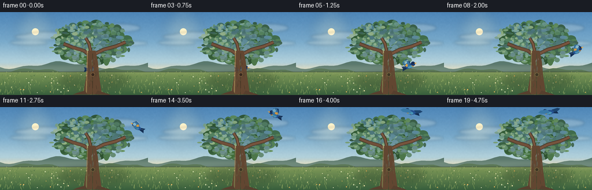
展开代码变化
--- 上一保存版本
+++ 本次保存版本
@@ -174,77 +174,77 @@
canopy = Image.new("RGBA", S, (0, 0, 0, 0))
rng = np.random.default_rng(33)
- base_clusters = [
- (158, 52, 47, 29), (126, 47, 28, 22), (190, 49, 30, 23),
- (111, 65, 27, 18), (207, 66, 28, 18), (143, 34, 28, 18),
- (177, 34, 29, 18), (132, 78, 22, 14), (186, 79, 23, 15),
- (158, 34, 30, 15),
- ]
- shadow_boxes = []
- for cx, cy, rx, ry in base_clusters:
- shadow_boxes.append(((cx - rx - 1) * SS, (cy - ry + 3) * SS,
- (cx + rx + 1) * SS, (cy + ry + 5) * SS))
- shadow = ellipse_layer(S, shadow_boxes, (38, 67, 39, 230), 1.2 * SS)
- canopy = Image.alpha_composite(canopy, shadow)
-
- mid_boxes = []
- for cx, cy, rx, ry in base_clusters:
- mid_boxes.append(((cx - rx) * SS, (cy - ry) * SS,
- (cx + rx) * SS, (cy + ry) * SS))
- mid = ellipse_layer(S, mid_boxes, (58, 101, 53, 255), 0.35 * SS)
- canopy = Image.alpha_composite(canopy, mid)
-
- # Broken leaf clusters create a less geometric crown silhouette.
- for _ in range(115):
+ # Build a continuous, irregular crown from many overlapping leaf masses.
+ # The muted base keeps the bird and sunlit leaf highlights legible.
+ for _ in range(145):
angle = rng.uniform(0, 2 * math.pi)
- radius = rng.uniform(0, 1) ** 0.6
- cx = 158 + math.cos(angle) * radius * 67
- cy = 56 + math.sin(angle) * radius * 36
- if cy > 91:
+ radius = rng.uniform(0, 1) ** 0.55
+ cx = 158 + math.cos(angle) * radius * 64
+ cy = 53 + math.sin(angle) * radius * 34
+ if cy > 89:
continue
- rx = rng.uniform(4.0, 10.5)
- ry = rng.uniform(3.0, 8.0)
+ rx = rng.uniform(5.0, 12.0)
+ ry = rng.uniform(4.0, 9.0)
color = tuple(int(v) for v in rng.choice([
- (55, 98, 50), (65, 111, 55), (75, 121, 60),
- (87, 132, 65), (47, 86, 47),
+ (47, 87, 48), (54, 96, 51), (62, 106, 54),
+ (70, 115, 57), (43, 79, 44),
]))
d = ImageDraw.Draw(canopy, "RGBA")
d.ellipse(((cx - rx) * SS, (cy - ry) * SS,
(cx + rx) * SS, (cy + ry) * SS),
- fill=color + (rng.integers(180, 245),))
-
- # Sunlit upper-left leaf masses.
- for _ in range(130):
- cx = rng.normal(135, 23)
- cy = rng.normal(44, 15)
- if not (85 < cx < 205 and 20 < cy < 72):
+ fill=color + (int(rng.integers(200, 250)),))
+
+ # Smaller leaf daubs roughen the silhouette and give internal variation.
+ for _ in range(260):
+ angle = rng.uniform(0, 2 * math.pi)
+ radius = rng.uniform(0.25, 1.08)
+ cx = 158 + math.cos(angle) * radius * 64
+ cy = 53 + math.sin(angle) * radius * 34
+ if not (16 < cy < 90):
continue
- rx = rng.uniform(1.5, 5.2)
- ry = rng.uniform(1.1, 3.7)
+ rx = rng.uniform(1.5, 6.0)
+ ry = rng.uniform(1.1, 4.0)
+ if radius < 0.70:
+ colors = [(49, 91, 48), (58, 101, 52), (69, 113, 57),
+ (41, 76, 42), (79, 121, 59)]
+ else:
+ colors = [(54, 96, 49), (43, 78, 43), (72, 116, 57),
+ (37, 70, 40), (87, 130, 61)]
+ color = tuple(int(v) for v in rng.choice(colors))
+ d = ImageDraw.Draw(canopy, "RGBA")
+ d.ellipse(((cx - rx) * SS, (cy - ry) * SS,
+ (cx + rx) * SS, (cy + ry) * SS),
+ fill=color + (int(rng.integers(125, 215)),))
+
+ # Warm, broken sunlight concentrated on the upper-left of the crown.
+ for _ in range(115):
+ cx = rng.normal(137, 27)
+ cy = rng.normal(42, 16)
+ if not (79 < cx < 203 and 20 < cy < 74):
+ continue
+ rx = rng.uniform(1.2, 5.2)
+ ry = rng.uniform(0.9, 3.2)
color = tuple(int(v) for v in rng.choice([
- (111, 151, 73), (128, 163, 79), (145, 172, 89),
- (99, 142, 67), (163, 183, 100),
+ (112, 147, 72), (130, 160, 79), (149, 173, 88),
+ (101, 137, 66), (164, 180, 94),
]))
d = ImageDraw.Draw(canopy, "RGBA")
d.ellipse(((cx - rx) * SS, (cy - ry) * SS,
(cx + rx) * SS, (cy + ry) * SS),
- fill=color + (rng.integers(110, 205),))
-
- # Fine leaf speckles along the silhouette.
- for _ in range(300):
- angle = rng.uniform(0, 2 * math.pi)
- cx = 158 + math.cos(angle) * rng.uniform(62, 78)
- cy = 57 + math.sin(angle) * rng.uniform(31, 42)
- if not (15 < cy < 94):
+ fill=color + (int(rng.integers(90, 175)),))
+
+ # Dappled dark pockets anchor the larger forms.
+ for _ in range(75):
+ cx = rng.normal(164, 30)
+ cy = rng.normal(58, 18)
+ if not (88 < cx < 225 and 23 < cy < 86):
continue
- r = rng.uniform(0.45, 1.25)
- color = tuple(int(v) for v in rng.choice(
- [(42, 77, 43), (75, 113, 57), (103, 139, 66)]
- ))
+ rx = rng.uniform(1.5, 6.0)
+ ry = rng.uniform(1.0, 4.0)
d = ImageDraw.Draw(canopy, "RGBA")
- d.ellipse(((cx - r) * SS, (cy - r) * SS,
- (cx + r) * SS, (cy + r) * SS),
- fill=color + (rng.integers(140, 230),))
+ d.ellipse(((cx - rx) * SS, (cy - ry) * SS,
+ (cx + rx) * SS, (cy + ry) * SS),
+ fill=(36, 69, 41, int(rng.integers(70, 135))))
trunk = Image.new("RGBA", S, (0, 0, 0, 0))
td = ImageDraw.Draw(trunk, "RGBA")
@@ -374,11 +374,11 @@
def draw_bird(canvas, frame):
# Position keyframes keep the takeoff readable at the low frame rate.
positions = [
- (159, 99), (159, 99), (159, 99), (162, 99),
- (179, 98), (194, 94), (208, 87), (219, 78),
- (226, 68), (230, 57), (231, 46), (230, 35),
- (226, 26), (218, 19), (208, 14), (199, 11),
- (192, 9), (188, 8.5), (187, 8.5), (188, 9),
+ (159, 99), (159, 99), (159, 99), (163, 99),
+ (181, 98), (197, 94), (211, 87), (222, 78),
+ (230, 68), (235, 57), (237, 46), (237, 35),
+ (234, 26), (228, 19), (219, 14), (209, 11),
+ (199, 9), (191, 8.5), (186, 8.5), (182, 9),
]
cx, cy = positions[frame]
if frame < 3:
候选 03播放与检查图
点击播放 · 原生 RGB 像素
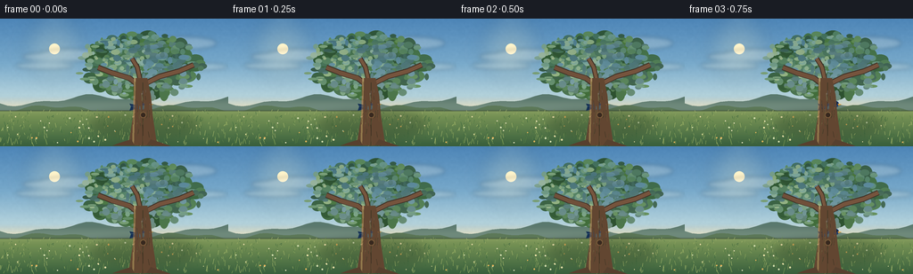
展开代码变化
--- 上一保存版本
+++ 本次保存版本
@@ -258,18 +258,18 @@
3.7, rgb("#77563e"), rgb("#403126"))
trunk_points = [
- (151, 67), (165, 67), (169, 86), (171, 109),
- (176, 143), (144, 143), (149, 111), (151, 88),
+ (148, 67), (166, 67), (169, 86), (170, 109),
+ (176, 143), (140, 143), (146, 110), (149, 87),
]
td.polygon([(x * SS, y * SS) for x, y in trunk_points], fill=rgb("#624631") + (255,))
- td.line([(151 * SS, 67 * SS), (149 * SS, 143 * SS)],
+ td.line([(149 * SS, 67 * SS), (146 * SS, 143 * SS)],
fill=(176, 127, 82, 120), width=int(2.2 * SS))
td.line([(160 * SS, 72 * SS), (160 * SS, 143 * SS)],
fill=(67, 45, 31, 150), width=int(1.2 * SS))
# Bark ridges and knots.
for _ in range(38):
- x = rng.uniform(149, 173)
+ x = rng.uniform(147, 172)
y = rng.uniform(74, 141)
length = rng.uniform(3.5, 13.0)
lean = rng.uniform(-1.4, 1.4)
@@ -277,14 +277,14 @@
[(61, 42, 30), (91, 63, 42), (111, 77, 50)]
))
td.line((x * SS, y * SS, (x + lean) * SS, (y + length) * SS),
- fill=color + (rng.integers(95, 180),), width=max(1, int(0.65 * SS)))
- td.ellipse((157 * SS, 105 * SS, 164 * SS, 112 * SS),
+ fill=color + (int(rng.integers(95, 180)),), width=max(1, int(0.65 * SS)))
+ td.ellipse((154 * SS, 105 * SS, 161 * SS, 112 * SS),
fill=(53, 37, 28, 205), outline=(127, 89, 58, 170), width=SS)
# Roots flare into the grass.
roots = [
- [(147, 136), (134, 140), (126, 143), (151, 143)],
- [(169, 136), (184, 141), (192, 144), (164, 143)],
+ [(144, 136), (130, 140), (122, 143), (148, 143)],
+ [(168, 136), (184, 141), (192, 144), (163, 143)],
]
for root in roots:
td.polygon([(x * SS, y * SS) for x, y in root], fill=rgb("#57402e") + (255,))
候选 04播放与检查图

候选 05播放与检查图
点击播放 · 原生 RGB 像素
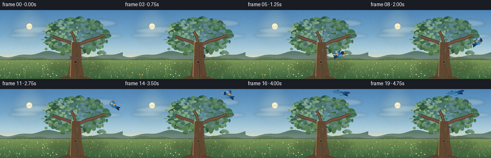
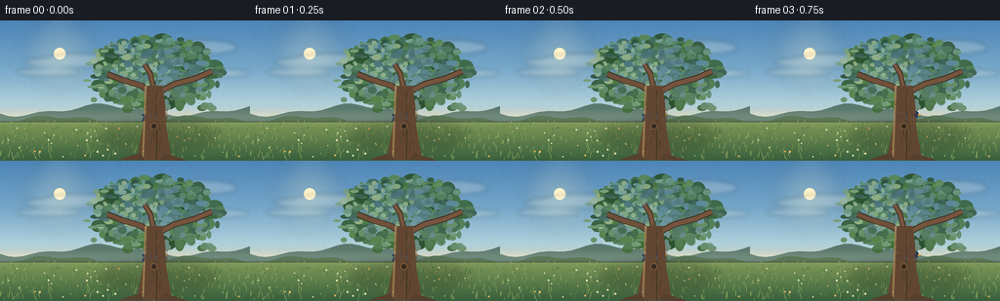
展开代码变化
--- 上一保存版本
+++ 本次保存版本
@@ -245,6 +245,23 @@
d.ellipse(((cx - rx) * SS, (cy - ry) * SS,
(cx + rx) * SS, (cy + ry) * SS),
fill=(36, 69, 41, int(rng.integers(70, 135))))
+
+ # Break up the crown's lower edge with leaf lobes that do not imply a
+ # single circular mask, while keeping the bird's takeoff corridor open.
+ for _ in range(60):
+ cx = rng.uniform(95, 221)
+ cy = rng.uniform(70, 91)
+ if 141 < cx < 175 and cy > 81:
+ continue
+ rx = rng.uniform(2.0, 6.0)
+ ry = rng.uniform(1.4, 4.2)
+ color = tuple(int(v) for v in rng.choice([
+ (43, 80, 43), (54, 94, 49), (65, 107, 54), (78, 121, 58),
+ ]))
+ d = ImageDraw.Draw(canopy, "RGBA")
+ d.ellipse(((cx - rx) * SS, (cy - ry) * SS,
+ (cx + rx) * SS, (cy + ry) * SS),
+ fill=color + (int(rng.integers(145, 225)),))
trunk = Image.new("RGBA", S, (0, 0, 0, 0))
td = ImageDraw.Draw(trunk, "RGBA")
候选 06播放与检查图
点击播放 · 原生 RGB 像素
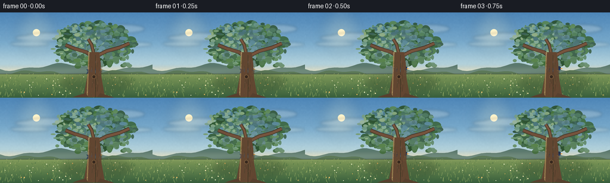
展开代码变化
--- 上一保存版本
+++ 本次保存版本
@@ -391,7 +391,7 @@
def draw_bird(canvas, frame):
# Position keyframes keep the takeoff readable at the low frame rate.
positions = [
- (159, 99), (159, 99), (159, 99), (163, 99),
+ (159, 99), (160, 98), (162, 97), (164, 97),
(181, 98), (197, 94), (211, 87), (222, 78),
(230, 68), (235, 57), (237, 46), (237, 35),
(234, 26), (228, 19), (219, 14), (209, 11),
可观测工具轨迹
实际执行的命令与返回图片。
命令 1exit 0
/bin/bash -c "pwd && rg --files -g 'prompt.txt' -g 'GENERATION_RULES.md' -g 'task_spec.json' -g '"'!node_modules'"'"
命令 2exit 0
/bin/bash -c 'ls -la'
命令 3exit 0
/bin/bash -c 'git status --short --branch'
命令 4exit 0
/bin/bash -c 'cat prompt.txt'
命令 5exit 0
/bin/bash -c 'cat GENERATION_RULES.md'
命令 6exit 0
/bin/bash -c 'cat task_spec.json'
命令 7exit 0
/bin/bash -c "sed -n '1,260p' artifact_io.py"
命令 8exit 1
/bin/bash -c 'python generate.py'
命令 9exit 1
/bin/bash -c 'python generate.py'
命令 10exit 1
/bin/bash -c 'python generate.py'
命令 11exit 1
/bin/bash -c 'python generate.py'
命令 12exit 0
/bin/bash -c 'python generate.py'
命令 13exit 0
/bin/bash -c 'python generate.py'
命令 14exit 0
/bin/bash -c "rg -n \"ellipse\\(\\(157|roots =|trunk_points|td.polygon\" generate.py"
命令 15exit 0
/bin/bash -c "sed -n '230,315p' generate.py"
命令 16exit 0
/bin/bash -c "rg -n \"fill=color \\+ \\(rng.integers|outline=\\(127|fill=\\(36, 69, 41\" generate.py"
命令 17exit 0
/bin/bash -c 'python generate.py'
命令 18exit 1
/bin/bash -c 'which magick || which convert'
命令 19exit 0
/bin/bash -c "sed -n '175,260p' generate.py"
命令 20exit 0
/bin/bash -c 'python generate.py'
命令 21exit 0
/bin/bash -c "sed -n '1,260p' player_template.html"
命令 22exit 0
/bin/bash -c "python - <<'PY'
import json, hashlib
from pathlib import Path
import numpy as np
from PIL import Image
p=Path('.')
spec=json.loads((p/'task_spec.json').read_text())
data=np.load(p/'pixels.npz')['pixels']
print('pixels', data.shape, data.dtype, 'range', int(data.min()), int(data.max()))
print('unique colors', len(np.unique(data)))
print('frames', len(list((p/'frames').glob('*.png'))), 'index', (p/'index.html').stat().st_size, 'bytes')
arr=np.stack([np.asarray(Image.open(p/'frames'/f'{i:02d}.png')) for i in range(spec['frames'])])
print('png', arr.shape, arr.dtype, 'all finite', bool(np.isfinite(arr).all()))
print('nonblank frame counts', [int(np.any(Image.open(p/'frames'/f'{i:02d}.png').convert('RGB').resize((32,18)) "'!= 0)) for i in [0,9,19]])
print('"'sha256 pixels', hashlib.sha256((p/'pixels.npz').read_bytes()).hexdigest())
print('caption', json.loads((p/'index.html').read_text().split('const DATA=',1)[1].split(',W=',1)[0])['caption'])
PY"命令 23exit 0
/bin/bash -c "python - <<'PY'
from pathlib import Path
import numpy as np
from PIL import Image, ImageDraw
folder=Path('frames')
images=[Image.open(folder/f'{i:02d}.png').convert('RGB') for i in range(20)]
# Close-up sequence of the motion, nearest-neighbor upscaled for inspection.
w,h=256,144
sheet=Image.new('RGB',(w*5,h*4+42),(22,25,30)); d=ImageDraw.Draw(sheet)
for i,img in enumerate(images):
x=(i%5)*w; y=(i//5)*(h+10)+10
d.text((x+4,y-9),f'{i:02d}',fill=(240,240,240))
sheet.paste(img.resize((w,h)),(x,y))
sheet.resize((w*5,h*4+42)).save('inspection_motion.png')
# Motion difference stats.
a=np.stack([np.asarray(x).astype(np.int16) for x in images])
diffs=np.abs(np.diff(a,axis=0)).mean(axis=(1,2,3))
print('mean frame differences:', ' '.join(f'{v:.2f}' for v in diffs))
print('all frames distinct:', all(np.any(a[i]"'!=a[i-1]) for i in range(1,20)))
PY'命令 24exit 0
/bin/bash -c "python generate.py && python - <<'PY'
from pathlib import Path
import json
import numpy as np
from PIL import Image
p=Path('.')
spec=json.loads((p/'task_spec.json').read_text())
frames=sorted((p/'frames').glob('*.png'))
a=np.stack([np.asarray(Image.open(f).convert('RGB')) for f in frames])
z=np.load(p/'pixels.npz')['pixels']
print('frames',len(frames),'shape',a.shape,'packed',z.shape)
print('distinct consecutive',sum(np.any(a[i]"'!=a[i-1]) for i in range(1,len(a))),'"'of',len(a)-1)
print('nonblank',bool(np.any(a)),'channels',a.shape[-1])
print('index bytes',(p/'index.html').stat().st_size)
print('required outputs', all((p/x).exists() for x in ['generate.py','pixels.npz','index.html','inspection.png','frames/00.png','frames/19.png']))
PY"视觉工具实际返回图片 1
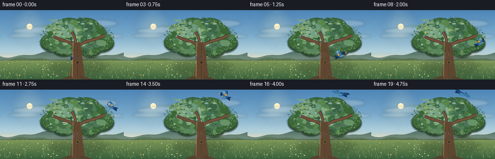
视觉工具实际返回图片 2
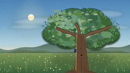
视觉工具实际返回图片 3
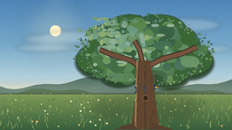
视觉工具实际返回图片 4
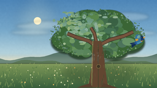
视觉工具实际返回图片 5
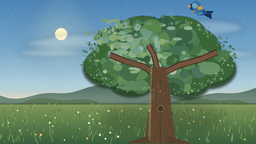
视觉工具实际返回图片 6

视觉工具实际返回图片 7
视觉工具实际返回图片 8
视觉工具实际返回图片 9
视觉工具实际返回图片 10
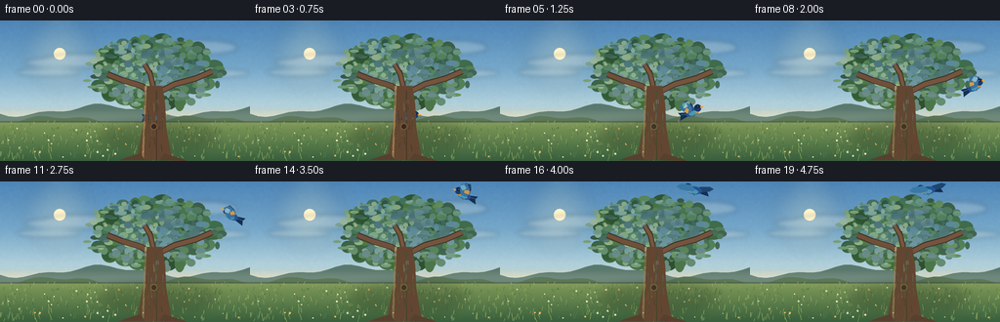
视觉工具实际返回图片 11
视觉工具实际返回图片 12
视觉工具实际返回图片 13
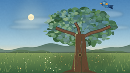
视觉工具实际返回图片 14
视觉工具实际返回图片 15

视觉工具实际返回图片 16
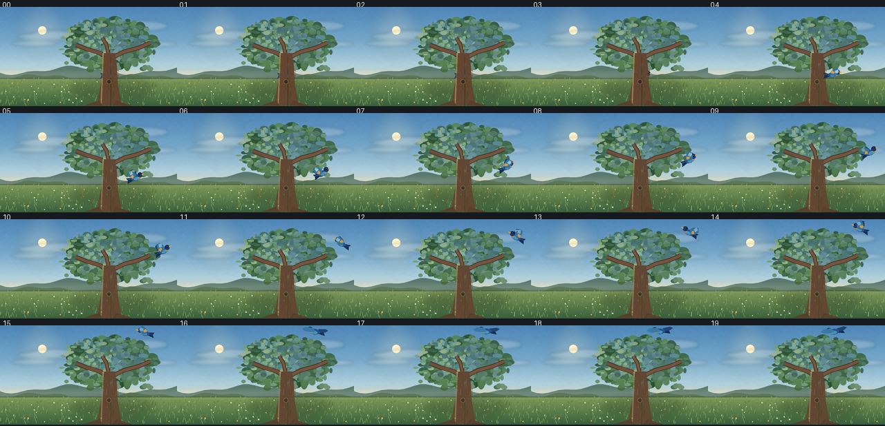
保存候选 6 份；完成命令 24 次；可验证图片返回 16 张。原始 API 响应与完整日志保留在本地。